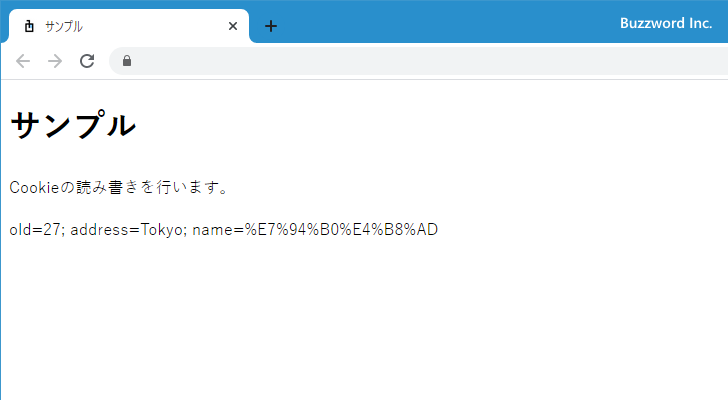
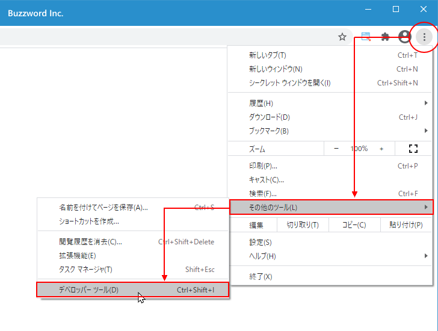
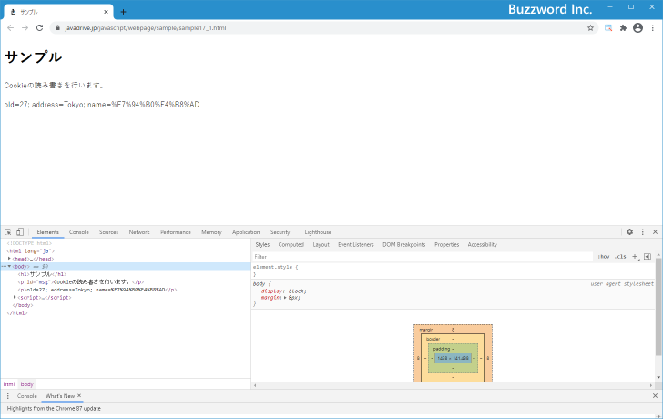
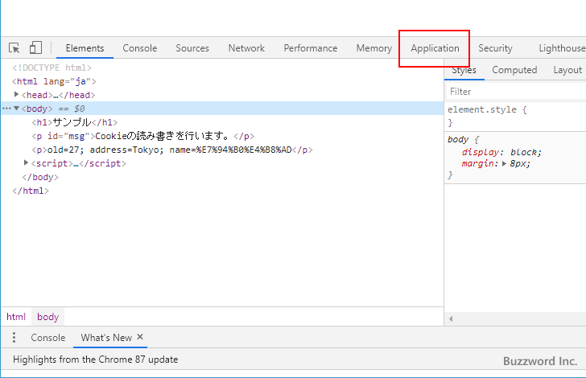
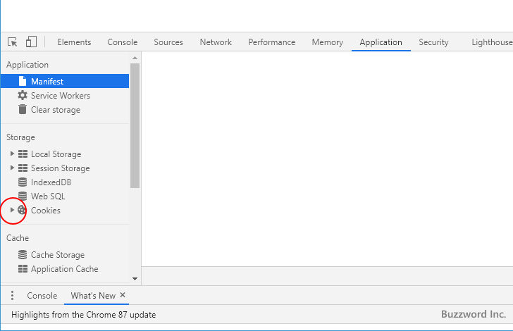
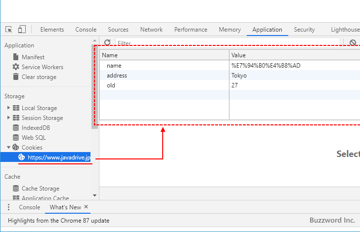
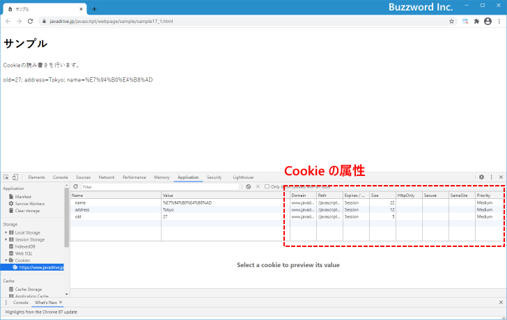

Cookieへの書き込みと読み出し(document.cookie)
Cookie はブラウザに保存される小さなテキストデータです。サーバからブラウザに送信されて保存されたり、逆にブラウザから保存していた Cookie をサーバに送ったりするものですが、 document オブジェクトの cookie プロパティを使用するとブラウザに保存されている Cookie を読み込んだり新しい値を Cookie に書き込むことができます。ここでは JavaScript を使って Cookie を保存したり、保存されている Cookie を読み込む方法について解説します。
Cookieの読み込みと書き込み
Cookie とはブラウザに保存可能な短い文字列のデータです。 Web サーバにブラウザからアクセスしたときに、サーバ側からブラウザに Cookie のデータを送信して保存したり、ブラウザから Web サーバに対して保存していた Cookie を送信したりします。
window.document オブジェクトの Cookie プロパティを参照することで、現在開いている Web ページに関連付けられているすべての Cookie を読み込むことができます。書式は次のとおりです。
document.cookie
Cookie は 'NAME=VALUE' の形式で保存されています。複数の組み合わせを保存することができるため、取得した値は次のような形式になっています。
'name1=value1; name2=value2; ...'
逆に Cookie を書き込む場合は、 document.cookie に対して値を代入します。
document.cookie = newcookie
Cookie に書き込む値は 'NAME=VALUE' の形式で書き込みます。複数の組み合わせを書き込めますが、一度に書き込めるのは一つだけです。
document.cookie = 'name=Tanaka'; document.cookie = 'old=27';
NAME や VALUE にセミコロン(;)、カンマ(,)、空白、日本語が含まれる場合は URL エンコードを行った上で記述する必要があります。
let myname = encodeURIComponent('田中');
document.cookie = 'name=' + myname;
Cookie に書き込む値には有効期限などいくつかの属性を合わせて書き込むことができます。 Cookie で設定可能な属性と設定方法については「Cookieで指定可能な属性の種類と設定方法」を参照されてください。
次のサンプルを見てください。
<!DOCTYPE html>
<html lang="ja">
<head>
<meta charset="UTF-8">
<title>サンプル</title>
</head>
<body>
<h1>サンプル</h1>
<p id="msg">Cookieの読み書きを行います。</p>
<script>
document.cookie = 'old=27';
document.cookie = 'address=Tokyo';
let name = encodeURIComponent('田中');
document.cookie = 'name=' + name;
let e = document.getElementById('msg');
e.insertAdjacentHTML('afterend', '<p>' + document.cookie + '</p>');
</script>
</body>
</html>
ブラウザで Web ページを表示すると、先に Cookie を書き込んだあと、今度は保存されている Cookie を読み込んでブラウザに表示します。

Chromeのデベロッパーツールで保存されているCookieを確認する
保存されている Cookie はブラウザから確認することもできます。ここでは例として Google Chrome を使って保存されている Cookie を確認してみます。
対象の Web ページを表示した状態で Chrome の画面右上に表示されている「?」をクリックし、表示されたメニューの中から「その他のツール」をクリックし、さらに「デベロッパーツール」をクリックしてください。

画面下部にデベロッパーツールが表示されます(別の位置に表示するように設定されている場合もあります)。表示されたら「Application」タブをクリックしてください。


左側メニュー一覧の中の「Storage」の中にある「Cookies」の左側にある下矢印をクリックして展開してください。

展開された中にある対象のホスト名をクリックすると、右側の画面に Cookie に保存されている NAME と VALUE の組み合わせの一覧が表示されます。

それぞれの組み合わせの右側には Cookie で設定可能な属性の値が表示されています。今回は明示的に属性を設定していないので、すべてデフォルトの値が設定されています。

属性を設定して Cookie に値を書き込む方法は「Cookieで指定可能な属性の種類と設定方法」を参照されてください。
-- --
JavaScript を使って Cookie を保存したり、保存されている Cookie を読み込む方法について解説しました。
( Written by Tatsuo Ikura )

著者 / TATSUO IKURA
初心者～中級者の方を対象としたプログラミング方法や開発環境の構築の解説を行うサイトの運営を行っています。